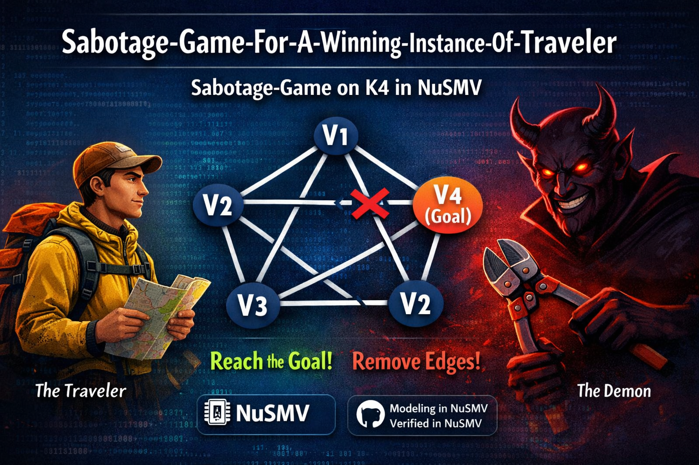
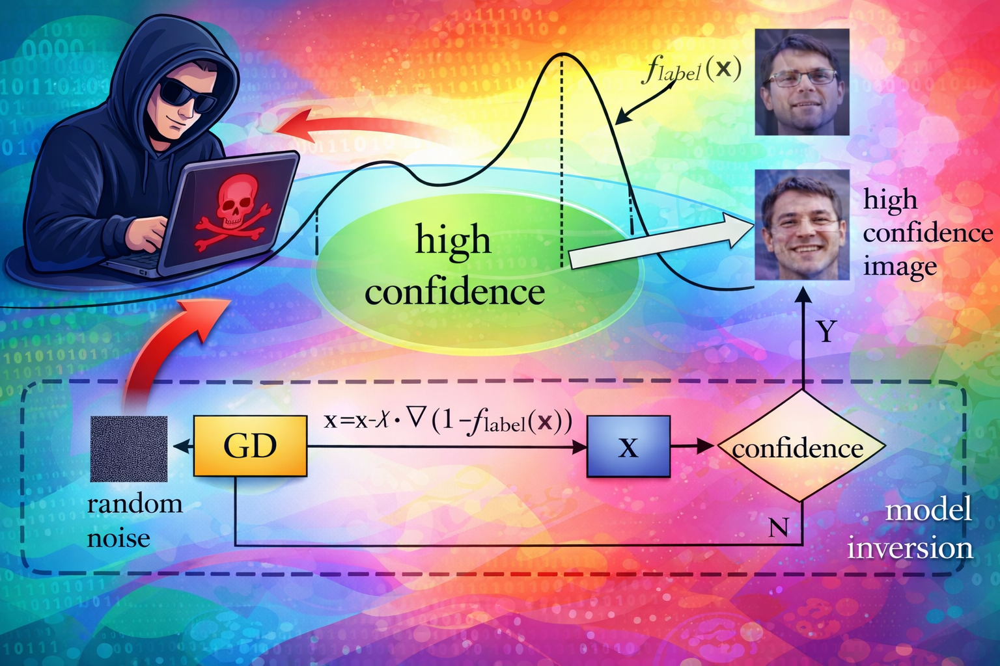

Projects
(This page is under development.You can find other projects in my github.)

📸
🌅
🔬
🔬
Buddy Dynamic Memory Allocation
Using the Buddy Memory Allocation technique and C We are implemented a custom memory allocator for the Operating Systems Course offered at ISI Kolkata. The allocator replaces system calls like malloc(), calloc(), realloc(), and free(), and provides functions for dynamic memory management using this custom technique.
C

15+
Completed Projects
14
Open Source
0+
GitHub Stars
3
Collaborations